腾讯，蚂蚁金服京东使用的数据库¶
蚂蚁金服——OceanBase¶
是阿里巴巴集团自主研发的分布式关系型数据库，融合传统关系型数据库强大功能与分布式系统的特点，具备持续可用、高度可扩展、高性能等优势。广泛应用于蚂蚁金服、网商银行等金融级核心系统。 在2015年双11承载了蚂蚁核心链路100%的流量，创下了交易、支付每秒支付峰值的新纪录，在功能、稳定性、可扩展性、性能方面都经历过严格的检验。
发展过程¶
特点：¶
- 分布式
- 可靠性好
业务创新——淘宝收藏夹¶
每个人都用过淘宝收藏夹，每次你打开收藏夹的时候，数据库在背后其实做了很多事情：我们以单个商品为例，它需要到一个叫商品库的地方，逐条纪录核对，看看商品有没有下架，有没有参与促销，有没有参加其他的返点活动等等。假如你收藏了 100 多件商品，它就要进去一条条的取出来看。本质上来讲，这就意味着一百多次的随机 IO。那么当很多人同时来看的时候，其实一个 IO 就被放大了几百倍，这时候有多少个硬盘都不够用。
解决方案：物化视图
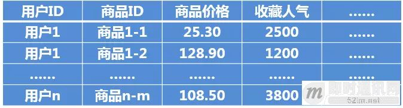
先把每个用户收藏的信息聚集起来，这样可以减少 IO，然后把收藏的商品放在这个列表里。但是我们怎么避免去访问一百多次 IO 呢？我们的办法就是找到一个时间点，当时是设定在每天晚上凌晨两点。在这之前，我们就把这些信息全部 merge 到硬盘，然后从两点开始，我们把新的修改都放在内存里面。
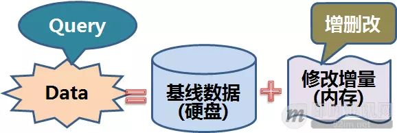
所以每到两点的时候，我们把两点之前所有的信息都合到这张表里，那么这张表里的信息在两点整的时候是准确的，这时候我们不需要去访问商品库。两点之后的修改，包括商品库的修改是在内存里进行的，这时候如果要看这些商品有哪些修改，商品只需访问内存中的更新即可。
所以其实我们就是通过这样一个手段，把每次收藏夹的展示，由原来的一百多次 IO 变成了一次。我们一下子就把淘宝收藏夹业务的整个 IO 降下来了。
Paxos协议¶
每一笔事务，主库执行完成后，要同步到半数以上库(包括主库自身)，例如3个库中的2个库，或者5个库中的3个库，事务才成功。这样，少数库(例如3个库中的1个库，或者5个库中的2个库)异常后业务并不受影响：
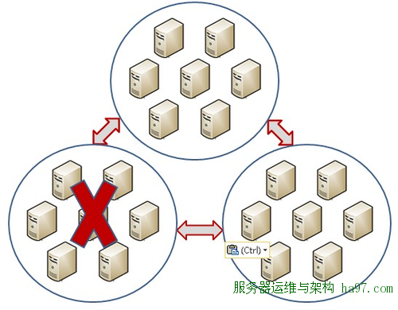
京东——JProxy¶
发展过程¶
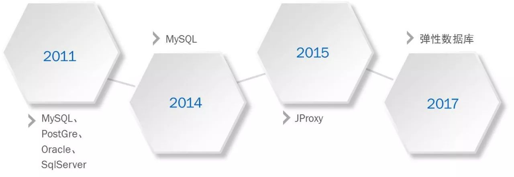
早期版本¶
每个JProxy都会有一个配置文件，在配置文件中配置相应业务的库表拆分信息及路由信息， JProxy接收到SQL以后会对SQL进行解析再根据路由信息决定SQL是否需要重写及该发往哪些节点，等各节点结果返回以后再将结果汇总按照MySQL传输协议返回给应用。
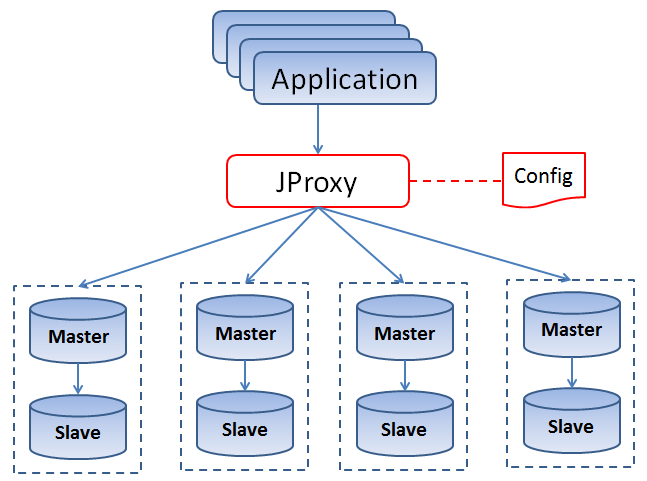
随着配置文件的增多，又引入了JManager模块，这个模块负责的工作是管理配置文件中的路由元信息。这样，JProxy的路由元信息都是通过JManager来统一获取，我们只需要通过JManager往元数据库里添加修改路由元数据，操作完成以后通知各个JProxy动态加载路由信息就可以保证每个JProxy的路由信息是完全一致的，从而解决维护路由元信息一致性的痛点。
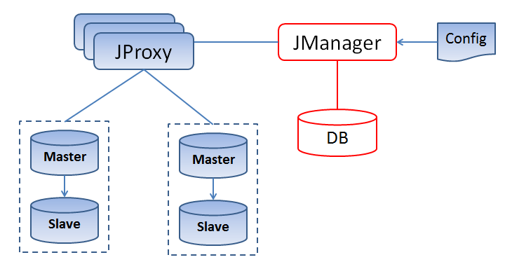
扩容解决方案——引入JTransfer模块
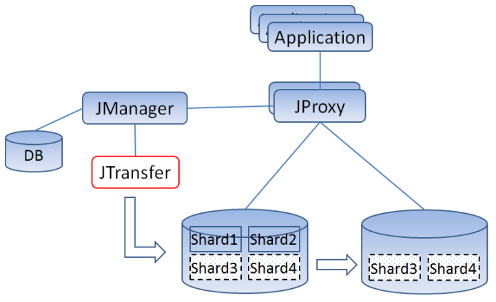
优化SQL查询——JMonitor
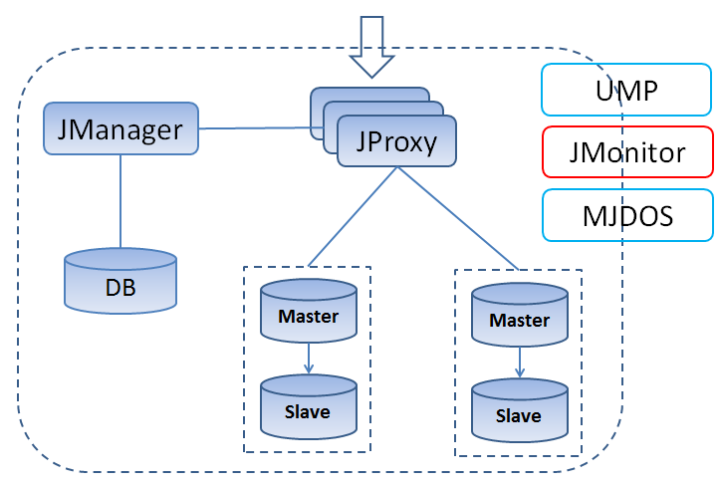
升级到弹性数据库¶
京东弹性数据库是一个产品系列，主要是解决数据库的运维、使用和研发过程中的问题，具备动态伸缩、高可用、查询透明路由、集群化日志服务和自动化运维等功能。
三个功能模块：
JED¶
JED是JProxy功能的父集，它除了具备透明路由、统一分库分表标准之外，还提供了五大功能：
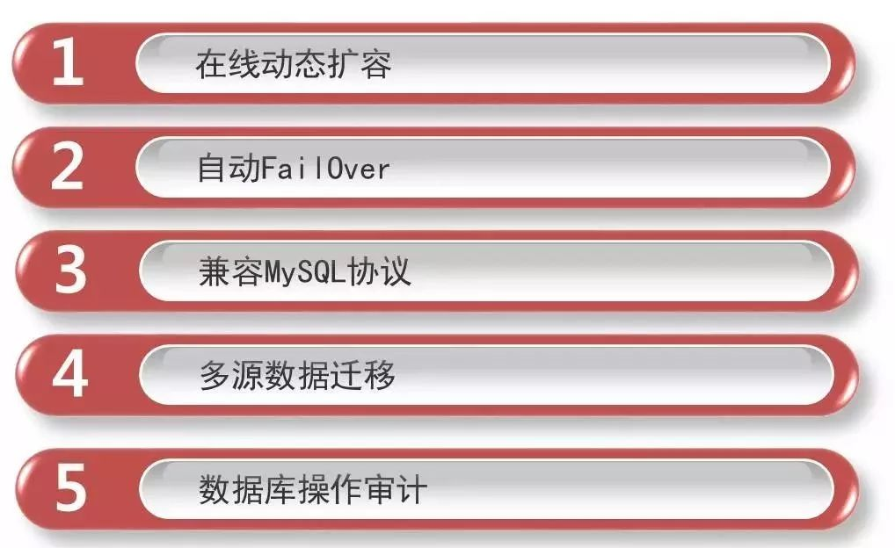
BinLake¶
BinLake只做一样工作：集群化Binlog的采集和订阅服务。
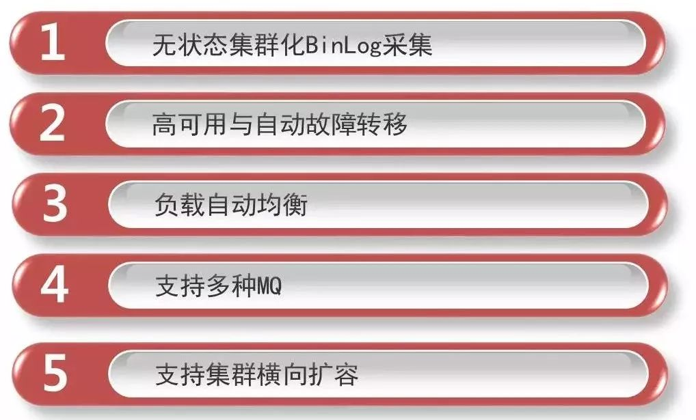
DBS¶
DBS主要完成自动化运维的工作。它可以完成数据库服务的自动化交付、数据库操作的流程化管理、数据库健康指数全面监控、数据库自动备份及结转，以及调度作业的多样化调度（包括定时、依赖以及触发三种调度模式）。

腾讯——TDSQL¶
发展历程¶
腾讯不同于上述两家互联网企业，内部并没有去IOE的过程，主要的发展历程如下：
迎接开源¶
一开始，腾讯云数据库建设主要引入了当时业界较为主流的开源数据库，如 MySQL，Redis，PostgreSQL 等。随后针对云上客户定制需求，腾讯云在数据库中衍生研发了如数据库并行复制、审计日志、在线加字段等核心功能，并计划逐步将以上功能回馈给 MariaDB 和 MySQL 社区。
内部自研¶
对于腾讯云自研的数据库，主要分为两类，一类是为腾讯内部业务适配而生的自研数据库，典型代表是 TDSQL。另一类是基于服务海量客户，由开源数据库适配业务自主研发的数据库，比如企业级云原生数据库 CynosDB。如果说节省运维以及人力成本是云数据库 1.0 时代的特征，到了 2.0 时代，云数据库要在根本上具备自建数据库无法比拟的优势，才能成为支持用户业务运转不可撼动的基石。
TDSQL架构¶
整体来说，TDSQL 是由决策调度集群 /GTM，SQLEngine、数据存储层等核心组件组成，其每个模块都基于分布式架构设计，可以实现快速扩展，无缝切换，实时故障恢复等
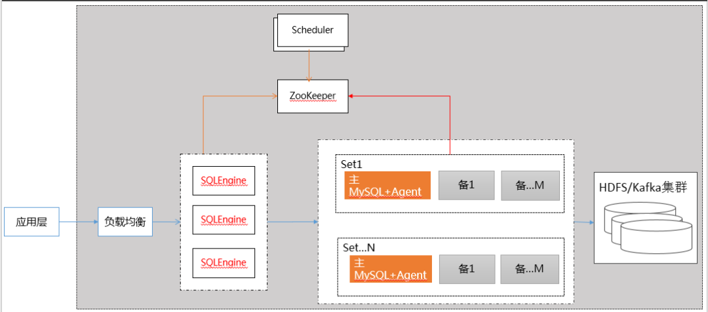
基于规则和基于代价的查询引擎¶
TDSQL 在 SQLENGINE 实现了基于代价的查询引擎 (CBO)，SQL 经过 SQLENGINE 的词法、语法解析、语义分析和 SQL 优化之后，会生成分布式的查询计划，并根据数据路由策略（基于代价的查询引擎）进行下推计算，最后对汇总的数据返回给前端。
CynosDB¶
2017年腾讯云自主研发了一款真正的云原生数据库CynosDB
设计思路：
- 先是计算存储分离，比如把运算 CPU 或者内存放在一起统一分配，可以获得弹性调度能力。
- 第二个是日志下沉及异步回放，同时移除了数据页面的刷脏逻辑，这样降低了计算存储分离的架构下的网络开销。
- 第三个是分布式存储，这也是我们腾讯云自研的分布存储系统，共享的分布式存储可以横向扩展。
- 第四个是后台的持续日志备份，传统数据库的备份是在数据库主机上去拷日志完成备份，而 CynosDB 的持续备份是在存储上进行，不干扰数据库实例，减轻由于备份对数据库的冲击，并且用户不必关心备份策略和备份存储资源规划。
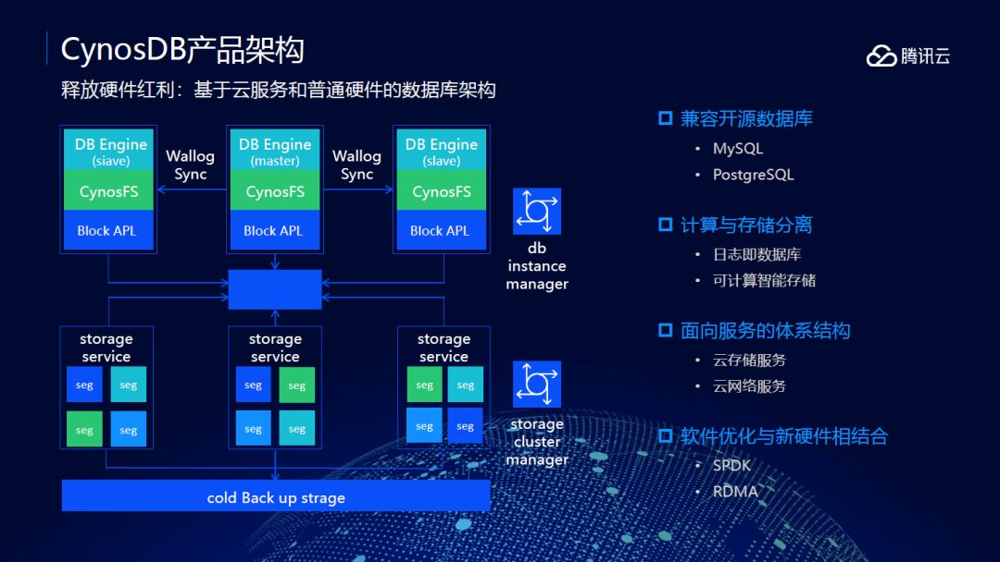